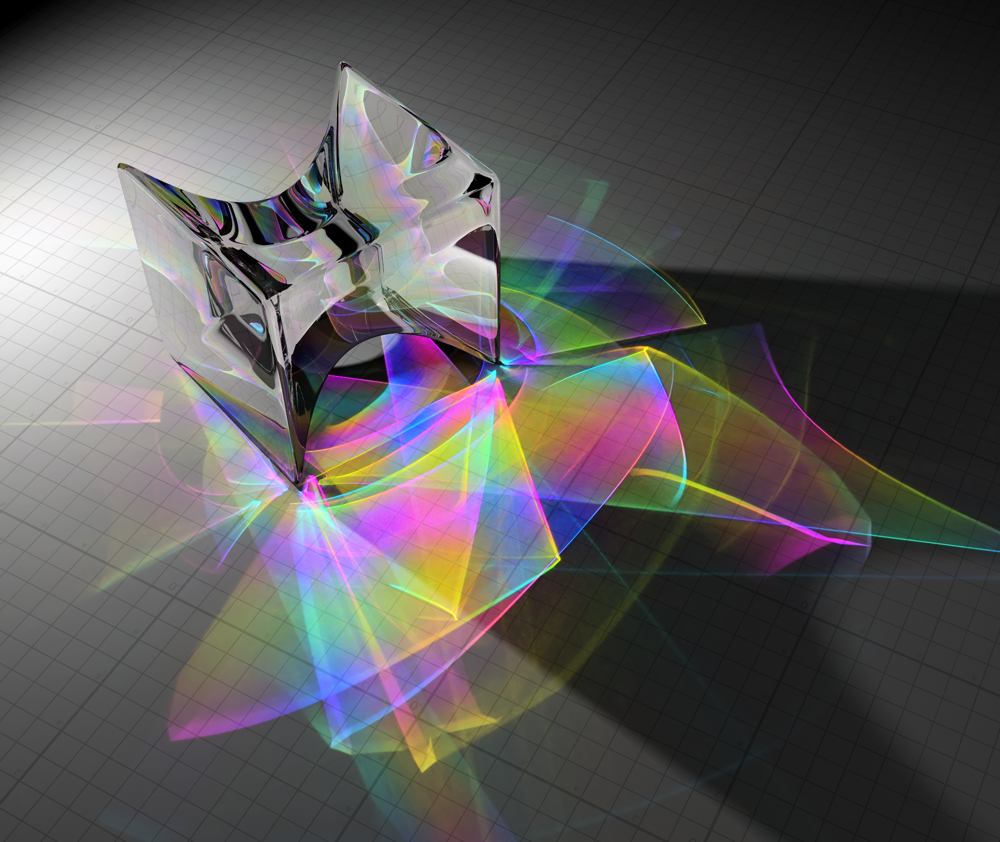

2013 Cover Image: Prism
Ben Spencer and Mark W. Jones
Crynodeb
This image depicts a glass prism backlit by a strong point emitter. A false colour scheme has been applied to the refracted caustic based on a parameterisation of the primal trajectory of each photon. When encoded by the photon map, this information can be used to dissociate subtle, interlaced or high-frequency structure in caustic illumination. Combined with photon relaxation, noise is effectively removed while minimising bias and loss of detail due to diffusion. The full algorithm is described in our paper, Photon Parameterisation for Robust Relaxation Constraints, presented at Eurographics 2013.
Deunyddiau Ffynhonnell
DOI
10.1111/cgf.12017
https://dx.doi.org/10.1111/cgf.12017
Enwi
Ben Spencer and Mark W. Jones, 2013 Cover Image: Prism, Computer Graphics Forum, 2013, 32(1), 216-217. https://dx.doi.org/10.1111/cgf.12017
BibTeX
@ARTICLE{CGF_Cover_Prism,
author = {Spencer, Ben and Jones, Mark W.},
title = {2013 Cover Image: Prism},
journal = {Computer Graphics Forum},
year = {2013},
volume = {32},
pages = {216--217},
number = {1},
date = {2013-02-21},
doi = {10.1111/cgf.12017},
issn = {1467-8659},
publisher = {Blackwell Publishing Ltd},
url = {http://dx.doi.org/10.1111/cgf.12017}
}